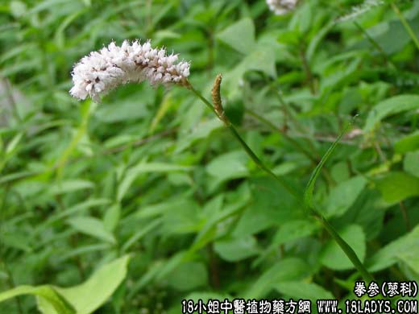

【中药概述】
拳参为蓼科植物拳参的根茎。苦，凉。归胃、大肠、心经。
1．清热镇惊：用于热病惊搐，破伤风，及热毒痈疡，肝炎，慢性气管炎；外治口舌生疮，牙龈炎，痈疖肿毒，痔疮出血，子宫出血等症。
2．除湿消肿：用于湿热泻痢，大便脓血，里急后重等。
【临证应用】
拳参 大青叶 板蓝根 连翘，用于风热感冒以咽喉肿痛突出者疗效尤佳。
【药理作用】
对金黄色葡萄球菌、溶血链球菌、卡他球菌、绿脓杆菌、炭疽杆菌、白喉杆菌、肠炎杆菌等有抑制作用。
【化学成分】
含鞣质8.9％、淀粉12～46％、糖类6％，及果胶、树胶、粘液质等。
【用量用法】
本品9——15g，水煎服，或入剂。外用适量。
【使用注意】
无实火热毒者不宜用，阴症外疡者忌服。